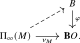

We now return to the classification of manifolds up to bordism. Given a map \(B \to \bB O\) and a topological space \(X\), we may consider bordism classes of manifolds equipped with a normal \(B\)-structure and a map to \(X\). For a cell complex \(X\), the Pontryagin–Thom theorem identifies these groups with the homology groups represented by \(MB\). We state this theorem as a black box and describe the collapse map which induces this identification.
We fix a map \(\phi \colon B \to \bB O\) throughout.
Definition 10.3.1 (Normal \(B\)-structure). Let \(M\) be a compact smooth \(n\)-manifold. Its stable normal bundle \(\ul {\R ^n}-T_M\) is a virtual vector bundle of rank \(0\), with classifying map \(\nu _M\colon \Pi _\infty (M)\to \bB O\). A normal \(B\)-structure on \(M\) is a lift of this map along \(\phi \):

Concretely, this consists of a map \(\sigma \colon \Pi _\infty (M) \to B\) together with an identification \(\phi \circ \sigma \simeq \nu _M\). If \(M\) has boundary, choose a splitting \(T_M|_{\partial M}\cong \ul {\R }_{\mathrm {out}}\oplus T_{\partial M}\), where the first summand is trivialized by an outward-pointing vector field. This gives an identification \[ (\ul {\R ^n}-T_M)|_{\partial M}\cong \ul {\R ^{n-1}}-T_{\partial M}. \] The choices form a contractible space, so a normal \(B\)-structure on \(M\) restricts to one on \(\partial M\). A diffeomorphism of manifolds with normal \(B\)-structures is understood to be equipped with an identification in the anima of such lifts.
Example 10.3.2. For \(B = \bB O\) with \(\phi \) the identity, a normal \(B\)-structure is no data at all. For \(B = \bB SO\) it is an orientation of the stable normal bundle, and for \(B = \pt \) it is a trivialization of it, that is, a stable framing of \(M\).
Definition 10.3.3 (\(B\)-bordism). Let \(X\) be a topological space and let \(n \geq 0\). A \(B\)-bordism cycle of degree \(n\) over \(X\) is a triple \((M,f,\sigma )\) consisting of a closed smooth \(n\)-manifold \(M\), a continuous map \(f\colon M \to X\), and a normal \(B\)-structure \(\sigma \) on \(M\). Two cycles \((M_0,f_0,\sigma _0)\) and \((M_1,f_1,\sigma _1)\) are bordant if there exist compact smooth \((n+1)\)-manifolds \(W_0\) and \(W_1\) with normal \(B\)-structures, together with maps \(F_i\colon W_i \to X\), and a diffeomorphism \[ M_0 \amalg \partial W_0 \; \cong \; M_1 \amalg \partial W_1 \] of manifolds with normal \(B\)-structures over \(X\).
We write \(\Omega _n^B(X)\) for the set of bordism classes. Disjoint union defines an addition, with the empty manifold as zero. For \(n<0\), we set \(\Omega _n^B(X)=0\).
Remark 10.3.4. This is the formulation of Switzer (1975), Definition 12.21. Bordism is an equivalence relation: reflexivity takes \(W_0=W_1=\varnothing \), symmetry is built into the statement, and transitivity follows by taking disjoint unions. It is compatible with disjoint union, making \(\Omega _n^B(X)\) a commutative monoid. The cylinder \(M\times [0,1]\), equipped with a normal \(B\)-structure restricting to \(\sigma \) at one end, gives an additive inverse to \([(M,f,\sigma )]\) at the other end, with its induced boundary structure and the map \(f\). Thus \(\Omega _n^B(X)\) is an abelian group; see Switzer (1975), Lemma 12.23.
A map \(g\colon X \to Y\) induces a homomorphism \(g_*\colon \Omega _n^B(X) \to \Omega _n^B(Y)\) by postcomposition. The map to the homology theory represented by \(MB\) is given by the collapse construction.
Construction 10.3.5 (Pontryagin–Thom transformation). Let \((M,f,\sigma )\) be a \(B\)-bordism cycle of degree \(n\) over \(X\). The closed smooth manifold \(M\) has the homotopy type of a finite cell complex by [Milnor (1963), Theorem 3.5 and Corollary 6.7], so the Thom-spectrum constructions above apply to its vector bundles. Choose a smooth embedding \(i\colon M \hookrightarrow \R ^{n+k}\) for some \(k\), compactify the ambient space to \(S^{n+k}\) with basepoint at infinity, and let \(\nu \) be the rank \(k\) normal bundle. Applying \(\Sigma ^{\infty }\) to the pointed collapse map of Construction 10.1.9 and shifting gives a map of spectra \[ \S [n] \longrightarrow \th (\nu )[-k]. \] The identification \(T_M\oplus \nu \cong \ul {\R ^{n+k}}\) gives an isomorphism \([\nu ]-[\ul {\R ^k}]\cong [\ul {\R ^n}]-[T_M]\), so by Lemma 10.2.22 the target is the Thom spectrum of the stable normal bundle. The normal \(B\)-structure identifies the stable spherical fibration of \(\nu -\ul {\R }^k\) with \(J\circ \phi \circ \sigma \). The map \((\sigma ,\Pi _\infty (f))\colon \Pi _\infty (M)\to B\times \Pi _\infty (X)\) therefore induces \[ \th (\nu )[-k] \cong \colim _{\Pi _\infty (M)}(J\circ \phi \circ \sigma ) \longrightarrow \colim _{B\times \Pi _\infty (X)}(J\circ \phi \circ \pr _B) \cong MB\otimes \S [X]. \] The arrow is induced by restricting the colimit cocone along \((\sigma ,\Pi _\infty (f))\); the final isomorphism follows by first taking the colimit over \(B\). The composite determines an element of \(\pi _n(MB \otimes \S [X])\). The resulting class is independent of the choices, depends only on the bordism class of \((M,f,\sigma )\), and is additive under disjoint union; these standard facts are part of the Pontryagin–Thom theorem as treated in Switzer (1975), Theorem 12.30 and Proposition 12.35. We thus obtain a natural homomorphism \[ \PT \colon \Omega _n^B(X) \longrightarrow \pi _n(MB\otimes \S [X]). \]
Theorem 10.3.6 (Pontryagin–Thom theorem). For every cell complex \(X\) and every \(n \in \Z \), the Pontryagin–Thom transformation is a natural isomorphism \[ \Omega _n^B(X) \xrightarrow {\cong } \pi _n(MB\otimes \S [X]). \] Thus \(\Omega _n^B(X)\) is naturally isomorphic to the unreduced homology group \(MB_n(X)\).
This is the generalized Pontryagin–Thom theorem for normal \(B\)-structures. We use it as a black box; see Stong (1968), Chapter II and Switzer (1975), Theorem 12.30, p. 230, and Proposition 12.35, p. 232. The theorem in Switzer treats the coefficient groups, and the proposition allows maps to a space \(X\). For \(n<0\), both sides vanish: the left-hand side does so by definition, while \(MB\otimes \S [X]\) is connective because \(J\circ \phi \) takes values in connective spectra and connective spectra are closed under colimits and tensor products.
Remark 10.3.7 (Relation to the classical formulation). The classical formulation uses a sequence of spaces over \(BO(k)\), which we may obtain from \(\phi \colon B\to \bB O\) by forming the pullbacks \(B_k:=B\times _{\bB O}\bB O(k)\), where the map \(\bB O(k)\to \bB O\) classifies \(\gamma _k-\ul {\R ^k}\). Universality of colimits in \(\An \) gives \(B\cong \colim _k B_k\). If we represent the sequence of maps \(B_k\to \bB O(k)\) by maps of cell complexes, and let \(E_k\) be the pullback of the universal rank \(k\) bundle, the argument of Theorem 10.2.24 gives \[ MB\cong \colim _k\th (E_k)[-k] \cong \colim _k\Sigma ^\infty \Pi _\infty \Th (E_k)[-k]. \] Thus \(MB\) is the spectrum associated to the classical sequence of Thom spaces.
Our definition of normal \(B\)-structures also gives the classical bordism groups. Compact smooth manifolds and their bordisms have finite cell-complex homotopy type, so their stable lifting data, including the identifications on boundaries, can be represented at finite stages \(B_k\). After stabilization, the corresponding bundles can be identified with normal bundles of embeddings. Using fibration models over \(BO(k)\) represents these lifting data by classical strict lifts. Replacing \(B\) by \(B\times \Pi _\infty (X)\) incorporates maps to \(X\).
Remark 10.3.8. The spectrum \(MB\) also represents a cohomology theory \(MB^*(X)\), traditionally called cobordism. We do not develop a geometric cocycle model for it; see Atiyah (1961a) for the relation with bordism.
Remark 10.3.9 (Coefficient rings). The Pontryagin–Thom theorem turns computations of bordism groups into computations of homotopy groups of spectra. For \(\MO \) and \(\MU \), Construction 10.2.26 constructs the multiplication on the Thom spectrum from Whitney sum. Under the Pontryagin–Thom isomorphism, this multiplication corresponds to cartesian product of bordism classes. We will not prove this geometric compatibility here.
Thom computed the unoriented coefficient ring as \[ \pi _*(\MO ) \cong \F _2[a_i \mid i \geq 1,\ i \notin \{2^j-1\mid j\geq 1\}], \qquad \abs {a_i}=i; \] see Thom (1954). The complex bordism spectrum has coefficient ring \[ \pi _*(\MU ) \cong \Z [x_1,x_2,\ldots ], \qquad \abs {x_i}=2i, \] a theorem of Milnor and Novikov; see Ravenel (1986). By Theorem 10.3.6, the underlying graded group is the complex bordism group, whose cycles are manifolds equipped with stable complex normal structures. Granting the multiplicative compatibility above, multiplication corresponds to cartesian product.
Example 10.3.10 (Framed bordism). For \(B = \pt \) with the constant map to \(\bB O\), we have \(MB = \S \). By Example 10.3.2 the cycles are then stably framed manifolds, and the Pontryagin–Thom theorem becomes \[ \Omega _n^{\mathrm {fr}}:=\Omega _n^{\pt }(\pt ) \cong \pi _n(\S ), \] recovering Pontryagin’s construction from the beginning of Section 10.1. In degree one, the nonzero class is represented by a stably framed circle that does not bound a framed surface. Under Pontryagin–Thom, it corresponds to the stable Hopf map \(\eta \) of Example 4.4.26.